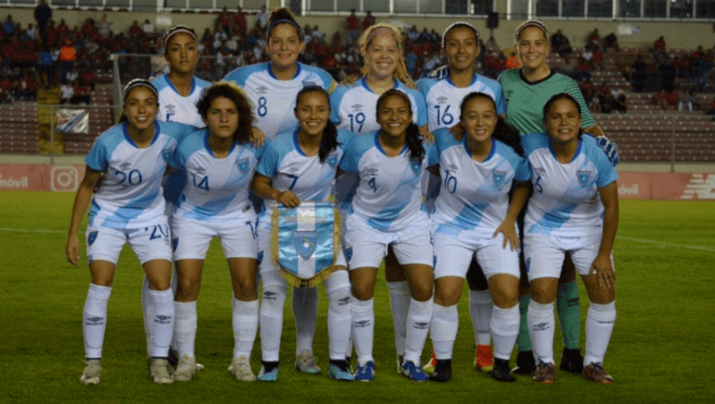
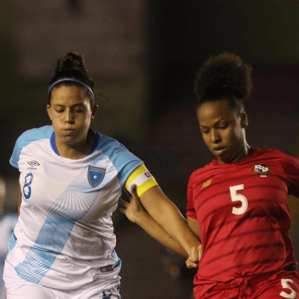

Calendario de Guatemala en las Eliminatorias de Concacaf rumbo al Mundial Femenino 2023
A continuación te dejamos el calendario de partidos de la selección de Guatemala en las Eliminatorias de Concacaf rumbo al Mundial Femenino 2023.
A continuación te dejamos el calendario de partidos de la selección de Guatemala en las Eliminatorias de Concacaf rumbo al Mundial Femenino 2023.
La selección femenina de fútbol ya sabe como empezará su camino rumbo al Mundial de Australia y Nueva Zelanda 2023. Aquí puedes conocer todos los detalles del calendario de partidos que afrontará Guatemala en las Eliminatorias de Concacaf.
Este viernes 21 de enero, el máximo ente de fútbol en la región confirmó las fechas y horarios de las primeras dos jornadas del torneo clasificatorio al Campeonato Concacaf Femenino 2022, el cual otorgará 4 cupos al próximo Mundial.
En la primera fase de las eliminatorias, Guatemala está ubicado en el grupo B junto a Costa Rica, San Cristóbal y Nieves, Islas Vírgenes Estadounidenses y Curazao. El torneo también servirá como clasificatorio para los Juegos Olímpicos de París 2024
La selección afrontará 4 partidos y deberá de quedar primer lugar de su grupo para clasificar al Campeonato de la Concacaf. De esta manera disputará sus juegos:
El debut de Guatemala será en el Estadio Pensativo. Al día siguiente emprenderá viaje al Caribe para visitar a Curazao en su capital. Las otras dos jornadas se disputarán en abril, el horario y sede aún no ha sido confirmado. Estas son las fechas programadas:
Te puede interesar: Convocatoria a guatemaltecos para obtener Licencia D y ser entrenadores de fútbol.
¿Ya sabías que en Guatemala.com tenemos canal de Telegram? Únete desde tu celular en este enlace de invitación.